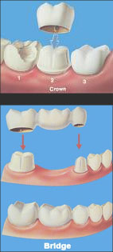

DENTAL CROWNS
Dental crowns, also known as "caps," preserve the
functionality of damaged teeth. Crowns may be used to
protect a cracked tooth, restore functionality of a tooth with
excessive decay or a large existing filling, or replace a
pre-existing crown. The purpose of a dental crown is to
encase a needy tooth with a custom-designed material.
BRIDGE
Fixed partial dentures (aka dental bridges) are an
extension of the dental crown treatment for replacement of
missing teeth. Crowns are placed on the teeth adjacent to
the missing tooth or teeth and connected to a missing
tooth-like replica. Although bridges may serve as a
functional and esthetic restoration, today's treatment-of-
choice for a missing tooth or teeth is with dental implants.
A dental implant replaces missing teeth with a titanium root
replica. A crown is then placed on the implant above the
gumline. Dental implants are a very predictable treatment
choice, returning support to the bite and preventing the
need for the unnecessary crowning of adjacent teeth.
CROWN MATERIALS
The three predominant choices of restorative materials for the full coverage crowns are:
1. Porcelain-fused-to-metal
2. All-ceramic (all-porcelain)
3. Gold
The material selected is determined by the clinical demands at hand, esthetic demands, strength requirements, material durability and restorative space available.
PORCELAIN-FUSED-TO-METAL CROWNS
Porcelain-fused-to-metal crowns provide for a strong, durable. and esthetic treatment
option. One of the key factors for the esthetic and functional success of this type of
crown is ensuring the preparation of the underlying tooth structure provides adequate
space for the appropriate thickness of the material selected. Additionally, the artistic skill
of the laboratory technologist creating the crown will determine its esthetic appeal. One
consideration in the porcelain-fused-to-metal crown is that these crowns may tend to
show the underlying metal or gold margin at the gum line as gums recede over time.
ALL-CERAMIC CROWNS
The predominant material choice for all-ceramic crowns
today is either zirconia, or aluminous materials. They
provide a metal-free esthetic option with a number of
benefits.
By eliminating the need for the supportive metal core, an esthetic all-ceramic crown can be created with a reduced thickness of material. This makes them a more favorable treatment choice in areas with limited space. Additionally, the elimination of the metal core allows for light transmission through the porcelain for better optical, life- like properties and a higher level of esthetics.
GOLD CROWNS
Although not as popular a treatment choice tor esthetic reasons, gold crowns are still
indicated in some instances. For example, patients with strong bites and those with
parafunctional habits (such as grinding or clenching) might be better served with a gold
crown. The traditional restorative material can provide stronger support to the remaining
healthy tooth structure. Gold crowns offer a level of durability that is appropriate tor teeth.